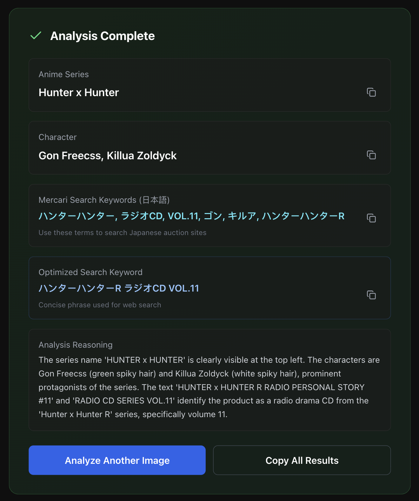
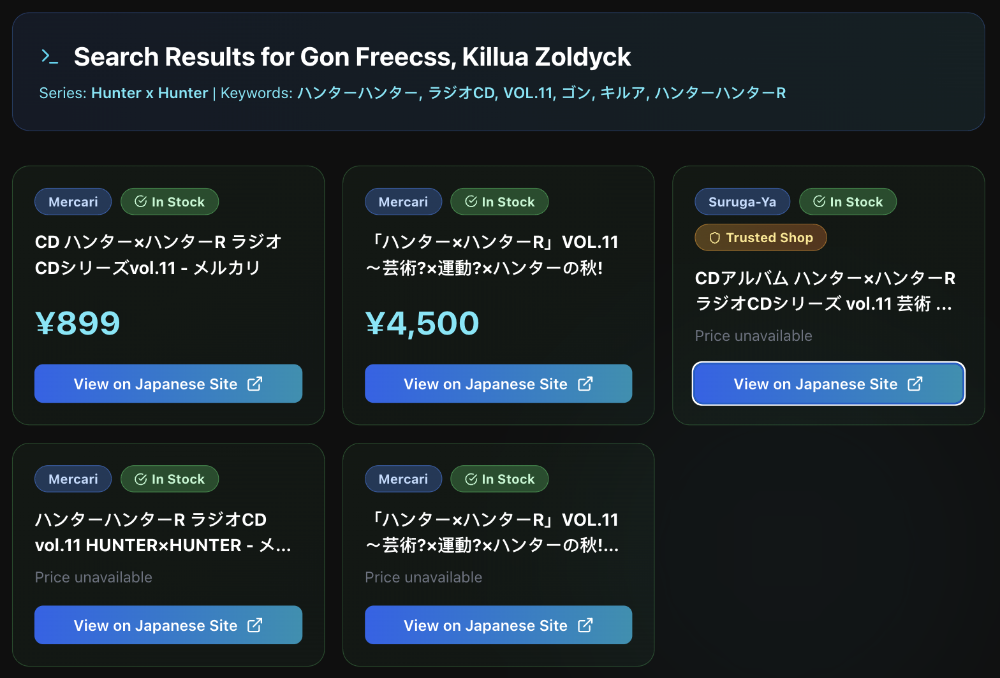

Projects
Anime Goods Agent
A multimodal agent that turns an image of anime merchandise into structured search actions on trusted Japanese marketplaces. Upload an image and the agent identifies likely series/character/item type, generates Japanese collector-style keywords, and returns ranked results with direct links.

Pain points
- Language gap — listings are primarily in Japanese
- Unknown terminology — you often don’t know the official product name or collector keywords
- Noisy discovery — broad visual search mixes social posts and unrelated sources
- Fragmented marketplaces — trusted sites must be searched separately
- High friction for rare items — small keyword differences can hide the only listing
What’s built (current)
- Gemini 2.5 image analysis → series, character, item type + reasoning trace
- Keyword grounding → Japanese collector-style keywords optimized for listings
- Scoped web search via Serper.dev → restricted to Mercari and Surugaya
- Result cleaning + ranking → price, condition, availability extraction
- Agent trace UI → transparent step-by-step reasoning display
Example Output


Roadmap
- Image upload → multimodal identification (Gemini 2.5)
- Japanese keyword generation for collector listings
- Marketplace retrieval via Serper.dev (Mercari + Surugaya only)
- Ranked results table + transparent agent trace
- Phase 1 — Visual grounding augmentation: integrate Lens-style visual search to retrieve visually similar matches, use them to refine keywords, and surface exact / near-exact match results separately in the UI.
- Phase 2 — Retrieval awareness: better availability inference, duplicate suppression, improved condition parsing, and structured query expansion (e.g., 特典 / 非売品 variants).
- Phase 3 — Collector assistance: refine by text intent (“same illustration”), support artwork variants, lightweight listing monitoring, and optional historical price estimation.